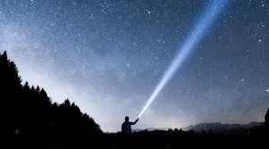

MIRA Jeugdkern
Quiz 2020
1| Een dummy vraag: Wat is het juiste antwoord?
- Het juiste antwoord
- Het foute antwoord
- Niet het juiste antwoord
- Ook niet het juiste antwoord
Evolutie
2| Welke wetenschapper is bekend geworden door zijn onderzoek naar evolutie?
- Einstein
- Darwin
- Newton
3| Van welke soort aap stamt de mens af?
- Gorilla
- Chimpansee
- Bonobo
- Geen enkele
4| Welk huidig dier is het meest verwant met de T-Rex?
- Krokodil
- Kip
- Komodovaraan
- Witte haai

5| Welk soort dier was Harriet, meegebracht door Darwin na zijn expeditie in 1835 en dat uiteindelijk in 2006 stierf in een zoo in Australië?
- Schildpad
- Kip
- Koe
Einde van de Wereld & Buitenaards Leven
6| Als de zon het einde van zijn leven nadert, begint hij op te zwellen tot een rode reuzenster, de aarde zal er dan nog steeds zijn, alleen is dan natuurlijk geen leven meer mogelijk. Binnen hoeveel jaar zal dit zijn ?
- 4.6 miljoen jaar
- 4.6 biljoen jaar
- 4.6 miljard jaar
- 4600 jaar
7| Volgens sommige mensen voorspelde de Maya kalender het einde van de wereld. Op welke datum eindigt volgens deze kalender de wereld?
- 21 december 2012
- 3 november 2020
- 11 november 2028
- 17 december 2036
8| Op welke planeet is er op 16 september 2020 fosfine gevonden? (wat kan duiden op primitief leven)
- Venus
- Mars
- Jupiter
- Saturnus
9| Welke maan in ons zonnestelsel maakt kans om leven te hebben door de aanwezigheid van veel water?
- Onze maan
- Io
- Triton
- Europa
10| Hoe heten de planeten die rond andere sterren dan onze zon draaien? Als de omstandigheden goed zijn is er hier kans op leven.
- Supernova’s
- Witte dwergen
- Exo-planeten
- Gasplaneten
11| Hoe heet de theorie die stelt dat leven op aarde niet ontstaan is op aarde, maar naar hier gekomen is door de ruimte?
- Exormie
- Panspermie
- Transmie
- Itermie
12| Welke conditie is het belangrijkste opdat een planeet leven kan herbergen?
- Er is zuurstof
- De juiste temperatuur
- Er is vaste grond
- Er moeten seizoenen zijn
Ruimtevaart en Planeten
13| Juli 2020 was een drukke maand want er werden maar liefst drie ruimtemissies naar de rode planeet Mars gestuurd. Een Arabische sonde genaamd Hope, een Chinese Tianwen en de Amerikanen kozen voor de complete naam Mars 2020. Maar wat is er speciaal aan de Mars 2020 missie van de NASA?
- Er zijn micro-organismen mee aan boord die moeten proberen op Mars te overleven.
- Er zijn twee aparte ruimtetuigen: een wagentje en een helikopter.
- Het is de eerste bemande missie naar Mars.
- Er is geen wagentje, er wordt telkens gevlogen naar andere plaatsen op het oppervlak.
14| Er wordt veel gezocht naar leven op Mars, maar Venus mengt zich nu ook in de debatten. Wat hebben wetenschappers ontdekt?
- In de wolken is een molecuul ontdekt die door micro-organismen gemaakt worden.
- Op het oppervlak is een molecuul ontdekt die door micro-organismen gemaakt worden.
- Er werden bevingen geregistreerd die niet van natuurlijke oorsprong zijn.
- Er is een enorme stijging van zuurstof, veroorzaakt door plantengroei.
15| Op de polen van onze maan zou meer water opgeslagen zijn dan tot nu toe werd aangenomen. Deze ontdekking werd geleverd door het SOFIA-observatorium. Maar wat is er bijzonder aan dit observatorium?
- Niets. Het is een observatorium zoals een ander.
- Het bevindt zich in een baan om de maan.
- Het bevindt zich in een baan om de aarde.
- Het bevindt zich in een vliegtuig.
16| Iedereen kent de vier grootste manen van Jupiter. Maar kan je ze correct rangschikken van klein naar groot?
- Ganymedes, Callisto, Europa, Io
- Io, Europa, Ganymedes, Titan
- Europa, Io, Callisto, Ganymedes
- Callisto, Europa, Io, Ganymedes
17| De landing van de Mars 2020 missie zal plaatsvinden in de Jezero krater. Wat is er zo speciaal aan die krater?
- Het is de grootste krater op Mars.
- Het is de oudste krater op Mars.
- Het is een krater die vroeger gevuld was met water.
- Het is de laatste krater die Opportunity bereikte.
Klimaat en Milieu
18| Welk voedsel is het slechtst voor het klimaat?
- Kaas
- Rundsvlees
- Varkensvlees
- Appel
19| Waarmee kan je de meeste CO2-uitstoot besparen?
- Je huis zuinig verwarmen
- Altijd maximum 5 minuten douchen
- Geen droogkast gebruiken
20| Wat veroorzaakt het broeikaseffect?
- Zware regenbuien
- Hondenpoep op de stoep
- Koolstofdioxide (CO2)
- Plasticsoep
21| Welk van de volgende drie landen telt de grootste CO2-uitstoot per inwoner?
- België
- Verenigde Staten van Amerika
- China
22| Als al het ijs op Groenland en Antarctica zou smelten, met hoeveel meter zou de zeespiegel dan stijgen wereldwijd?
- 12 meter
- 36 meter
- 65 meter
Fysica
23| Je staat nog in de gang van de bus wanneer die wegrijdt uit de halte en begint te versnellen. Je springt uit frustratie recht omhoog. Waar komen je voeten terecht?
- Op dezelfde plaats
- Meer naar de voorkant van de bus toe
- Meer naar de achterkant van de bus toe

24| Spiegeltje, spiegeltje, aan de ruimteschipwand, met lichtbron en detector aan de overkant, voor wie reist het licht over de langste afstand?
- O koningin, voor jou, hier in het ruimteschip, gaat het licht razend snel
- Maar voor Sneeuwwitje op aarde vliegt jouw schip ook wel heel snel
25| Wat smurft er niet?
- Dichtsmurf ondersmurft hier de effecten van de zwaartekrachtsmurf en alle drie smurfen van Newton
- Ismurf Newton kreeg het idee voor de zwaartekrachtsmurf toen hij een smurf op zijn peer kreeg
- De derde smurf van Newton wordt ook wel actie-reactiesmurf gesmurft
- Smurf Jobs was de topsmurf van Apple
26| Dankzij welke natuurkundige smurfen hebben we vandaag GPS (Globale Positionerings-Smurf)?
- De algemene relativiteitssmurf van Einsmurf
- De smurfen van Newton
- De gravitatiesmurf van Newton
- Al het bovensmurfende smurft
27| Dit is die jaar 2320. Aan boord van 'n ruimtetuig wat in Bloemfontein gaan land, sien jy deur die venster 'n kort treintonnel van 200 meter. 'N moltrein nader die tonnel by 60% van die ligspoed. Jy skat die trein als 300 meter lank. Wanneer sien jy die trein weer aan die ander kant verskyn?
- Die trein verdwyn eers heeltemal voordat dit aan die ander kant verskyn.
- Moet eers na die snelheidsmeter in die ruimteskip kyk.
- Dit is 'n truukvraag!
Cryptische Omschrijvingen
28| Hij is groot en in het bijvoeglijk naamwoord zit ook zijn kleur.
29| In het heelal zingt ze zonder instrumenten op de achtergrond.
30| Een dronken man kijkt naar de sterrenhemel. Wat zal hij veel zien?
31| Hij is je gids voor je oriëntatie bij nachtspelletjes. Dankzij hem geraak je het noorden nooit meer kwijt.
32| Wat was het centrale thema van deze ronde?
Stop de Band Ronde zonder Band
Aka Extra Vragen van Vincent
33| In Afrika is het te warm, en aan de Noordpool veel te koud. Daarom hebben wij gisteren...
- ... een maanraket gebouwd
- ... boodschappen gedaan
- ... een moto van een goede vriend geleend.
34| Ik ben hier ... , Marie is kapitein.
- de Koning
- de Eerste Stuurman
- de Drummer
35| Ik vlieg nu zonder handen, het is toch altijd rechtdoor. Hé Samson kijk maar voor je...
- ... want wat ben ik blij dat jij er bent!
- ... want we varen naar Timboektoetoe.
- ... want daar komt een meteoor!
36| Als je mee wil...
- Laat het water vallen, en doe gewoon je ogen dicht.
- Er is plaats genoeg. We blijven weg tot morgenvroeg.
- Het is wel heel ver, maar we zullen er geraken.
NEXT TIME…
12 december 2020
Goede en Slechte Sterrenkunde in Films
20:00 - 21:00